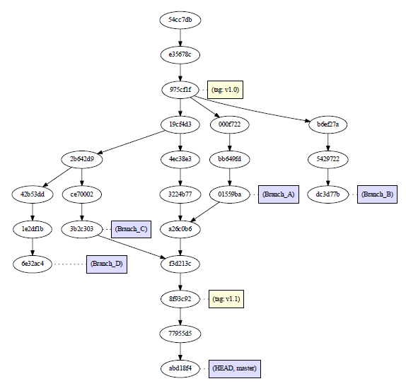
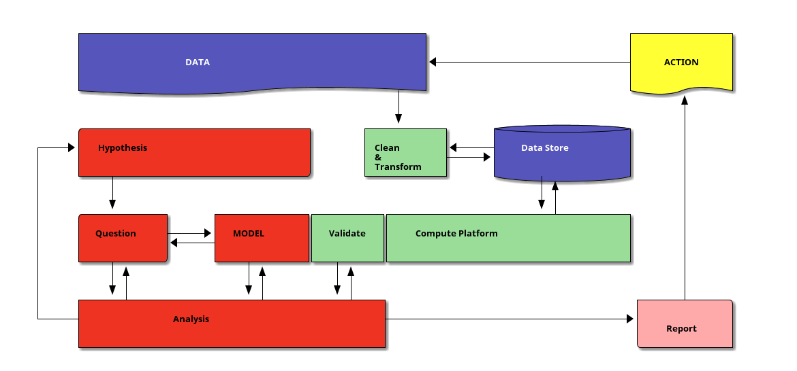

Math 381E
Atabey Kaygun
Tuesday, February 13, 2024
Welcome to MAT388E
Data Science for Fundamental Sciences
Focus
A hands-on practical introduction to machine learning algorithms.
- supervised and unsupervised learning,
- validation and error analysis,
- clustering and classification algorithms,
- regression algorithms,
- neural networks and related subjects.
Objectives
- to understand the fundamental concepts and algorithms
- to learn use cases of supervised and unsupervised algos
- to gain practical know-how on basic ML algorithms
- to learn how to apply ML algorithms to problems
- to learn how to analyze results
Who am I?
Originally theoretical math (algebra) turned data analyst by demand
- statical data analysis
- time series analysis
- text analysis
- topological data analysis
Syllabus and Assessment
Overview of the Syllabus
Assessment
- 4 homework projects
- final proposal (1500 words)
- final project (5000 words)
The Final Proposal
- dataset(s) with detailed description
- questions you ask the dataset(s)
- methods you are going to use
- list of team members
- division of labor (who will do what)
The Final Project
- dataset(s)
- hardware and software
- question(s)
- methods to extract answers from the dataset(s)
- obstacles and solutions
- analysis (what, why, how)
- workload breakdown (who, what, how much work)
Use of LLMs
I allow and even encourage students to large language models (ChatGPT, Claude2, LLAMA2 etc).
Your required to document the usage through logged transcripts.
Transparency and maintaining academic integrity.
The Tools
Python
- Popular open source programming language
- Flexible language good for beginners
- Widely used in industry and research
- Many libraries for data analysis
- Pandas,
- Numpy,
- Scikit-Learn etc.
Jupyter Notebooks
Notebooks are ideal for constructing a coherent narrative analysis of data because
Package Managers
Package manager manages the libraries installed on your system:
Online Compute Platforms
Git
Git is a version control system. (Image source)

GitHub
GitHub is a sharing platform. (Image source)

Markdown
Markdown is a markup language like HTML, but much simpler.
Data Science
What is Data?
Any collection of symbols can be data as long as they are
- recorded consistently
- collected within the same context
- recalled consistently and accurately
What is Data Science?
- interdisciplinary field
- extracts insights from data
- by fitting models on data
Data Science Workflow

Analysis Workflow
- Look at the data, clean it, understand it.
- Put forth a hypothesis.
- Design a question to test the hypothesis.
- Choose a model type.
- Design a fit function.
- Find the best fitting model parameters.
- Validate the model using the fit function.
- If necessary go back to step 2, 3 or 4.
- Write a report.
How is it different than Science?
In any science we do the same.
- Our domain is fixed.
- We need deep domain knowledge.
- Our models are specific to that particular domain.
How is Data Analysis different than Science?
Data Analysis models use
- internal structure of the data
- are domain agnostic
Developing these models requires
- statistical
- mathematical
- computational skills
Do we need all of this to do Data Analysis?
- No code no compute!
- No statistics no certainity!
- No mathematics no maintanence!

Can anyone do Data Analysis without domain knowledge?
Any fool can develop a model! (coding)

Can anyone do Data Analysis without domain knowledge?
It is difficult to see/decide if
- a model fits (domain knowledge)
- when/where model stops working (math/stats)
- fixing a model when it breaks (math)
What does a model do?
- Models can be
- predictive
- or descriptive.
Why Models?
“All models are wrong, but some are useful.” George Box
- Data is usually noisy, complex and hard to understand.
- Model is an artificial construct.
- Model is a simplification.
Applications
Examples
- Use of data science in academia
- Movie recommendations on Netflix
- Targeted ads on social media
- Predictive maintenance for manufacturing